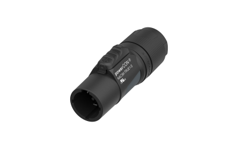

どの端子につなぐ？
接続先の型番と端子写真、IN／OUTの表示を共有。青・灰のpowerCONや、旧TRUE1を名前だけで同一視しない。
現場を動かす・支える ↗EQUIPMENT / 63
電源コネクター
電源を受ける側・送る側の端子を、型番で確認する。
KEY SPECIFICATIONS
 画像を大きく見る ＋
画像を大きく見る ＋01 / ROLE & FLOW

画像を拡大 ↗こちらは出力側に使うNAC3M-TRUE1-S。入力側のNAC3F-TRUE1-Sとは端面が異なります。機器のIN／OUT表示と型番を合わせて、必要な完成ケーブルを選びます。
02 / BEFORE YOUR BRIEF
接続先の型番と端子写真、IN／OUTの表示を共有。青・灰のpowerCONや、旧TRUE1を名前だけで同一視しない。
必要な長さ、両端の型番、機器負荷、電源回路と使用地域を電源担当へ共有。コネクターの定格だけで使用容量を決めない。
接続相手・キャップによる防塵防水条件、摩耗・破損・乾燥状態を確認。電源操作と抜き差しの担当・時機を事前に決める。
03 / CHOOSING THE RIGHT TOOL
掲載するのはケーブル端のコネクター部品です。
CBC（遮断容量）を備えることと、本番中の抜き差しを推奨することは別です。給電停止による機器・進行への影響を含め、機器の説明書と電源担当の運用に従います。IP65／IP67は、指定の接続相手と正しくつないだ状態、または適合キャップで閉じた状態での等級です。
欧州定格は16 A／250 V AC（EN IEC 60320-1）、米国・カナダ定格は20 A／250 V AC（メーカー指定規格・条件）です。NAC3F-TRUE1-Sは機器の入力端子NAC3MPX-TRUE1、NAC3M-TRUE1-Sは機器の出力端子NAC3FPX-TRUE1に対応する例です。両ケーブルコネクター同士を使う構成もありますが、両端と完成ケーブルの適合確認が必要です。現行の指定組合せはIP65／IP67、対応するTOPシャーシとの組合せはIP65とメーカー資料で区別されています。旧NAC3FX-W-TOP／NAC3MX-W-TOPはメーカーがPHASE OUTとし、上記現行品を後継として案内しています。旧TRUE1（non-TOP）や-L版、青・灰のpowerCON、他社の類似品へ互換性・定格・保護等級を一括で広げず、型番ごとに確認します。日本で使える容量や完成ケーブルの適合はこの欧米定格表示だけでは判断できません。
接続先の型番・端子写真、IN／OUT、必要な完成ケーブルの長さと両端、機器負荷、会場電源、使用地域、屋内外条件、キャップ、電源担当、電源操作の時機をお聞かせください。本体・周辺機材・搬入出・設営・本番操作・撤去を分けて、必要な範囲を整理します。
04 / RELATED EQUIPMENT